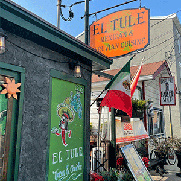

The Tomato Factory, Hopewell
This is just one antique store out of the several in the area, but it my personal favorite. Featuring three separate vendors, there are a lot of cool vintage collections to browse from. There are postcards, colored glassware, dish sets, and plenty of lamps. I could spend hours here sitting on the floor flipping through all the old papers.

Princeton Garden Theater, Princeton
his is a small movie theater with only two rooms but if there’s a new A24 or Oscar nomination, they’ll have it. Being in the middle of Princeton also makes for a better viewing experience as many of the large previews are removed before the show. You can also step into town after and grab dinner.

Princeton Art Museum, Princeton
This place has an impressive collection for a university museum, I once saw a Basquiat and a Keith Harring in the same exhibit. It’s a good size for a museum and can use anywhere from one to three hours of your time.
Grounds for Sculpture, Hamilton
This is not one of the towns I mentioned but about 10 minutes away from most of them. Grounds for Sculpture is a large outdoor art exhibit and great place to visit in the summer as your get to walk around the large property and look and/or interact with the art pieces.

Baldpate Mountain, Titusville
This is a relatively small mountain that overlooks the Delaware. It’s less than a mile up the hill and can be done in around 20 minutes but there are many small cutaways from the trail that make it interesting and the view at the end is amazing!

Walk Around Towns
Each of the previously listed towns has its own perks to walk around. Princeton has the most shops and the whole university campus to explore. There is a small park offHopewell that you can walk around. Pennington is close to many of the major buildings and is the most walkable if you know people living there, and Lambertville has a large bridge you can walk over. Very scenic.
Aunt Chubby's, Hopewell
This place is like a diner with an espresso machine! Great breakfast, great coffee, and a great place to ask people to meet up.
Vito's, Pennington
This is a classic New Jersey pizza place, with some saladsand other Italian foods but the main dish being pizza. This is one of those restaurants within walking distance of my high school, making it a staple of the community. Probably not the best pizza in the area, but relevant to the culture.
El Tule, Princeton
This place offers a fusion of Mexican and Peruvian dishes, with both tacos and ceviche on the same menu. It’s a bit more expensive but offers a cuisine that can be rare to find! It also has a lovely outdoor seating area and is right in the middle of Lambertville.